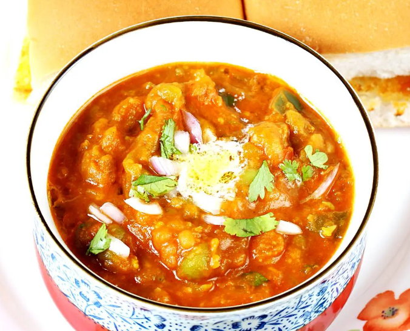

Pav Bhaji

Pav Bhaji is an indian fast food consisting of a thick spicy vegetable gravy served with soft dinner rolls. Pav means "bread roll" and bhaji means "vegetable dish". It is the textile worker's meal!
ingredients
- Pav (bread rolls)
- mixed vegetables (carrots, cauliflower, bell peppers, beans, potatoes and frozen peas)
- butter
- pav bhaji masala
making pav bhaji masala
dry roast, cooldown, grind and mix these together:
- 2 tablespoons coriander seeds
- 1 black cardamom
- 2 green cardamoms
- 1 tablespoon cumin or jeera
- 1 teaspoon pepper corn
- 0,5 tablespoon fennel seeds
- 3 dried red chillis
- 1 inch cinnamon stick
- 3 to 4 cloves
- 0,5 tablespoon amchur (dried mango powder)
Steps
- rinse, peel and cube about 2 larger potatoes (around 300g). Clean 1 cup cauliflower florets. Rinse 0,5 to 0,75 green peas. Add one medium carrot (half cut chopped).
- For making masala, chop 1 medium onion, 2 medium tomatoes, half bell pepper and 1 green chilli. Also make 1 tablespoon ginger garlic paste. Keep all of these aside.
- Add potatoes, cailiflower, peas and carrots to a pressure cooker or pot. Pour 1,5 cups water. Should be enough to cover them partially.
- Pressure cook for 1 to 2 whistles on medium flame.
- Veggies should be soft cooked. Mash them well.
to prepare onion tomato masala
- heat 1 tablespoon butter and 1 tablespoon oil in a pan.
- add 0,75 to 1 cup of chopped onions. Saute till translucent.
- Add 1 tablespoon ginger garlic paste and 1 green chilli. Fry until smells good. Don't burn, dummy
- Add half cup choppen bell pepper. Fry for 2 to 3 minutes.
- Add 0,75 to 1 cup chopped tomatoes and 1 teaspoon salt. Fry until tomatoes turn mushy, soft and pulpy.
- add teaspoon chilli power and 1 to 1,5 tablespoon pav bhaji masala powder.
- mix well and fry for 2 to 3 minutes.
make bhaji
- add the boiled and mashed veggies. Add 0,5 to 0,75 cups of water to bring it to a consistency.
- mix well and simmer for a while to bring the flavor of the masala. Taste test for salt, chili powder and pav bhaji masala.
- add 0,75 tablespoon kasuri methi. What is this?. When it reaches the desired consistency, add coriander leaves. Turn the FLAME off. Add some lemon juice before serving.
toast pav
- slit the pav horizontally. on a low flame, heat 1 teaspoon butter on a frying pan. add little masala powder over it.
- place pav for 1 to 2 min until slightly crisp.
- garnish with coriander leaves, lemon wedges and chopped onions. Top with more butter on hot bhaji. Server pav bhaji with more butter topped and onion.
- Enjoy!
This was shamelessly taken from https://www.indianhealthyrecipes.com/pav-bhaji-recipe-how-to-make-pav-bhaji-step-by-step-pictures/
home